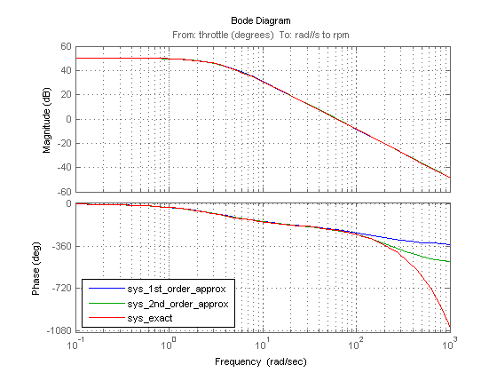
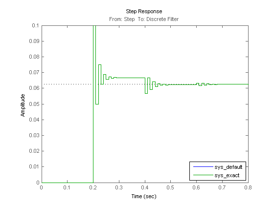

遅延を持つモデルの線形化
目次
連続遅延を持つモデルの線形化
次のいずれかのオプションを使用して、Transport Delay、Variable Transport Delay、Variable Time Delay などの連続時間遅延ブロックを持つ Simulink® モデルを線形化できます。
- 遅延のパデ近似を使用し、線形化を介して有理線形システムを取得する
- 遅延が正確に表現されている線形化を計算する。このオプションは、正確なシミュレーションや線形化モデルからの周波数応答が必要な場合とパデ近似の精度を評価する場合に使用します。
既定の設定では、Simulink® Control Design™ は、Simulink モデルで遅延ブロックのパデ近似を使用します。
このデモで使用されるエンジン スピード モデルを開くには、次のように入力します。
model = 'scdspeed';
open_system(model);

エンジン スピード モデルには、サブシステム Induction to Power Stroke Delay の dM/dt という Variable Transport Delay ブロックが含まれています。便宜上、次のように入力して、ブロックのパスを MATLAB® 変数に保存できます。
DelayBlock = 'scdspeed/Induction to Power Stroke Delay/dM//dt delay';
1 次近似を使用して線形化を計算するには、次のいずれかの手法を使用して、パデ近似の次数を 1 に設定します。
- Variable Transport Delay ブロック ダイアログ ボックスで、[パデ次数 (線形化用)] フィールドに 1 を入力する
- コマンド ラインで、次のコマンドを入力する
set_param(DelayBlock,'PadeOrder','1');
次のように入力し、スロットル角の線形化 I/O を入力として、エンジン スピードを出力として指定します。
io(1) = linio('scdspeed/throttle (degrees)',1,'in'); io(2) = linio('scdspeed/rad//s to rpm',1,'out');
次の線形化コマンドを使用して、線形化を計算します。
sys_1st_order_approx = linearize(model,io);
パデ近似を 2 に設定することで、2 次近似を使用して線形化を計算できます。
set_param(DelayBlock,'PadeOrder','2'); sys_2nd_order_approx = linearize(model,io);
正確な遅延表現を持つ線形モデルを計算するには、linoptions オブジェクトの 'UseExactDelayModel' プロパティを次のように設定します。
opt = linoptions;
opt.UseExactDelayModel = 'on';
次の線形化コマンドを使用して、モデルを線形化します。
sys_exact = linearize(model,io,opt);
次のように入力して、パデ近似モデルのボード応答と正確な線形化モデルを比較します。
p = bodeoptions('cstprefs'); p.Grid = 'on'; p.PhaseMatching = 'on'; p.XLimMode = {'Manual'}; p.XLim = {[0.1 1000]}; f = figure; bode(sys_1st_order_approx,sys_2nd_order_approx,sys_exact,p); h = legend('sys_1st_order_approx','sys_2nd_order_approx','sys_exact',... 'Location','SouthWest'); set(h,'Interpreter','none')
1 次近似の場合、位相は約 50 rad/s で拡散し始め、約 100 rad/s で拡散します。
Simulink モデルを閉じます。
bdclose(model)
離散遅延を持つモデルの線形化
Unit Delay ブロックや Integer Delay ブロックなどの離散遅延ブロックを持つモデルを線形化する場合は、正確な遅延オプションを使用し、状態をモデルのダイナミクスに追加しないで遅延を考慮します。これらの遅延を明示的に考慮すると、モデル内の状態が少ないため、多数の離散遅延を持つシステムのシミュレーション性能が向上します。
このデモに使用される 20 の遅延状態を持つ Integer Delay ブロックを使用して、離散システムの Simulink モデルを開くには、次のように入力します。
model = 'scdintegerdelay';
open_system(model);

既定の設定では、線形化には、線形モデルに畳み込まれたすべての状態が含まれています。線形化 I/O を設定して、モデルを線形化するには、次のようにします。
io(1) = linio('scdintegerdelay/Step',1,'in'); io(2) = linio('scdintegerdelay/Discrete Filter',1,'out'); sys_default = linearize(model,io);
結果のモデルを統合し、モデルに 21 の状態 (1 - 離散フィルター、20 - 整数遅延) があることを確認します。
size(sys_default)
State-space model with 1 outputs, 1 inputs, and 21 states.
'UseExactDelayModel' プロパティを使用して、この同じモデルを線形化するには、次のようにします。
opt = linoptions;
opt.UseExactDelayModel = 'on';
sys_exact = linearize(model,io,opt);
新しい結果のモデルを調べると、1 つの状態があり、遅延が線形化モデルで内部的に考慮されていることがわかります。
size(sys_exact)
State-space model with 1 outputs, 1 inputs, and 1 states.
両方の線形化モデルのステップ応答シミュレーションを実行し、次のように入力してそれらが同一であることを確認します。
step(sys_default,sys_exact); h = legend('sys_default','sys_exact',... 'Location','SouthEast'); set(h,'Interpreter','none')
Simulink モデルを閉じて、図をクリーンアップします。
bdclose(model) close(f)
遅延を持つ線形化モデルの操作
遅延を持つ線形化モデルの操作の詳細は、Control System Toolbox™ のドキュメンテーションと時間遅れの指定および遅延を持つ制御システムの解析のデモを参照してください。